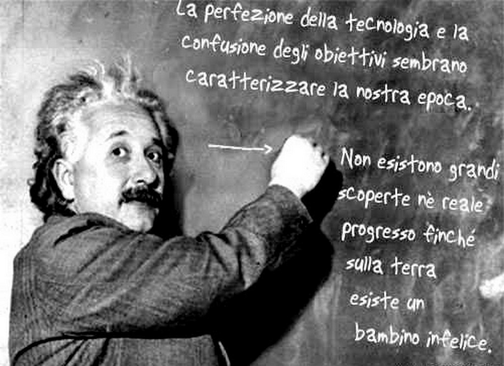
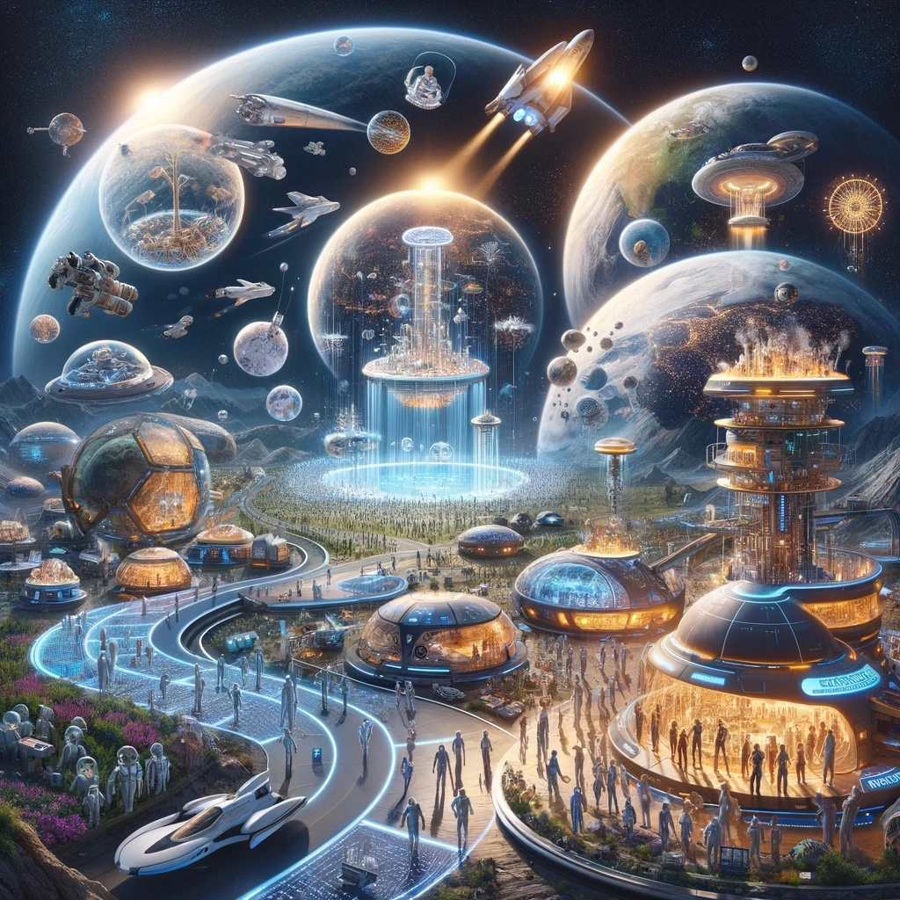
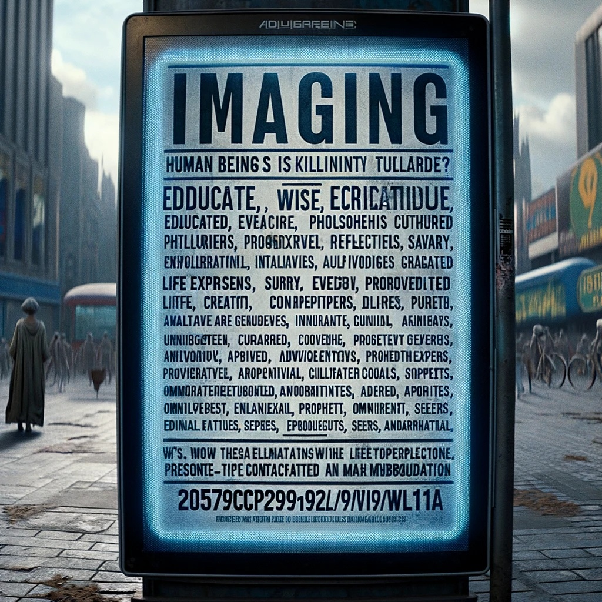
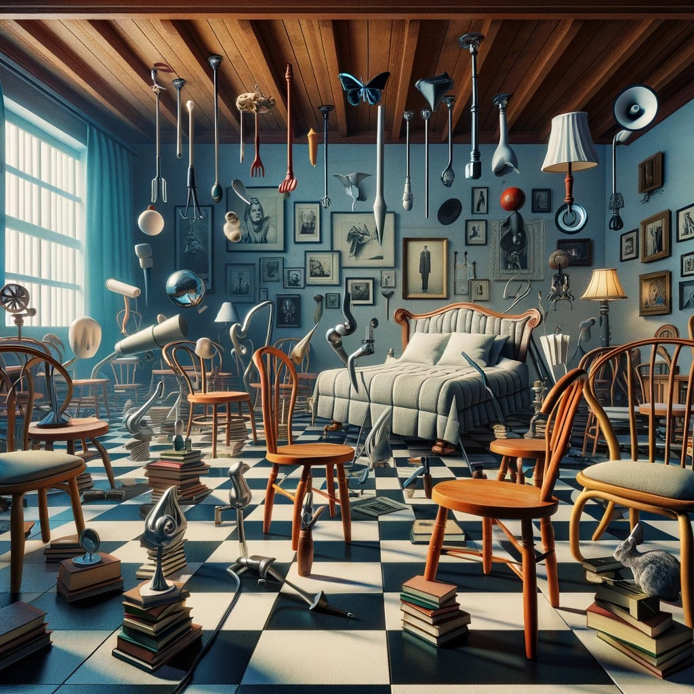
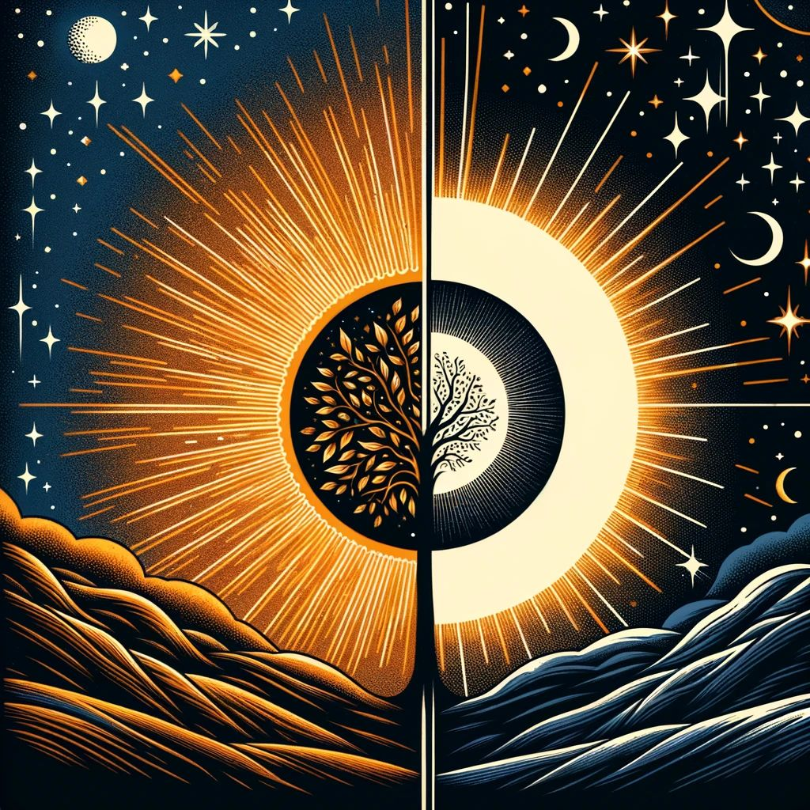
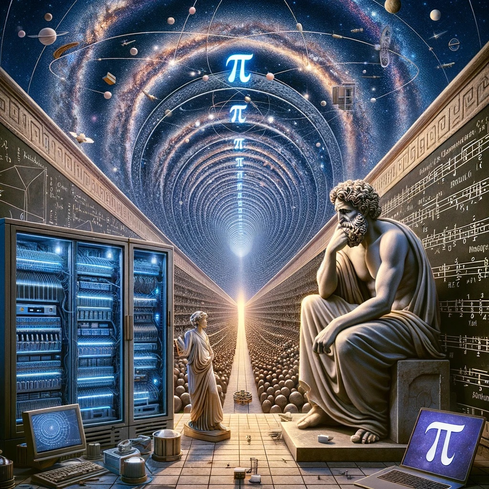
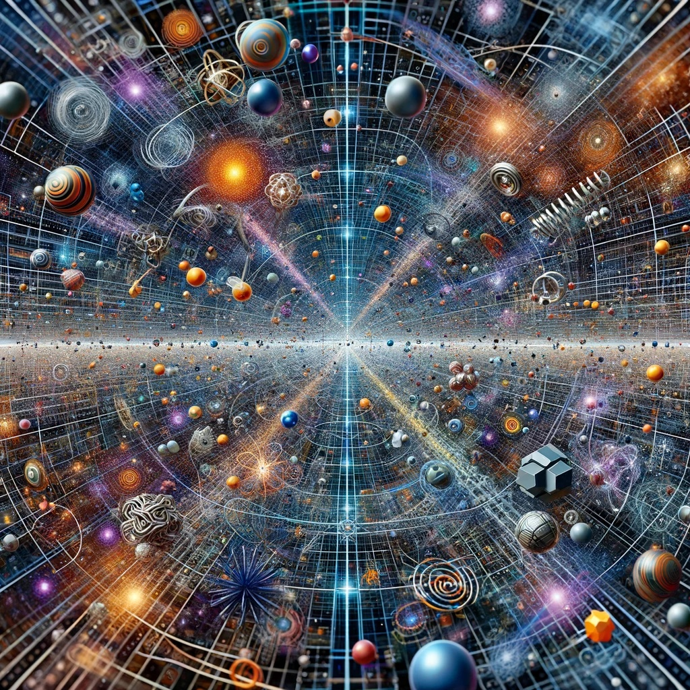
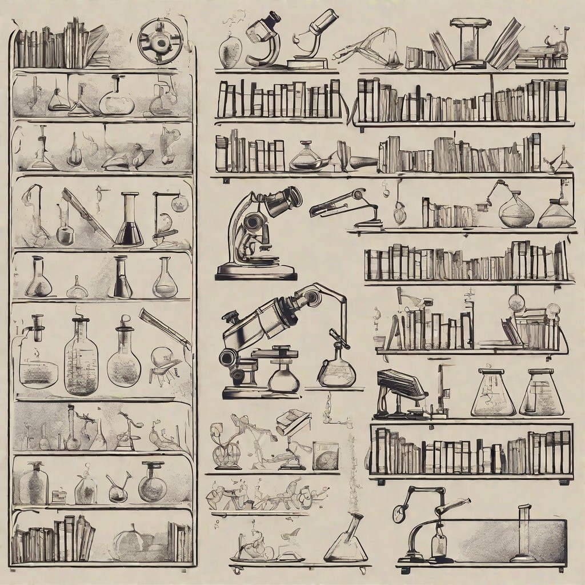
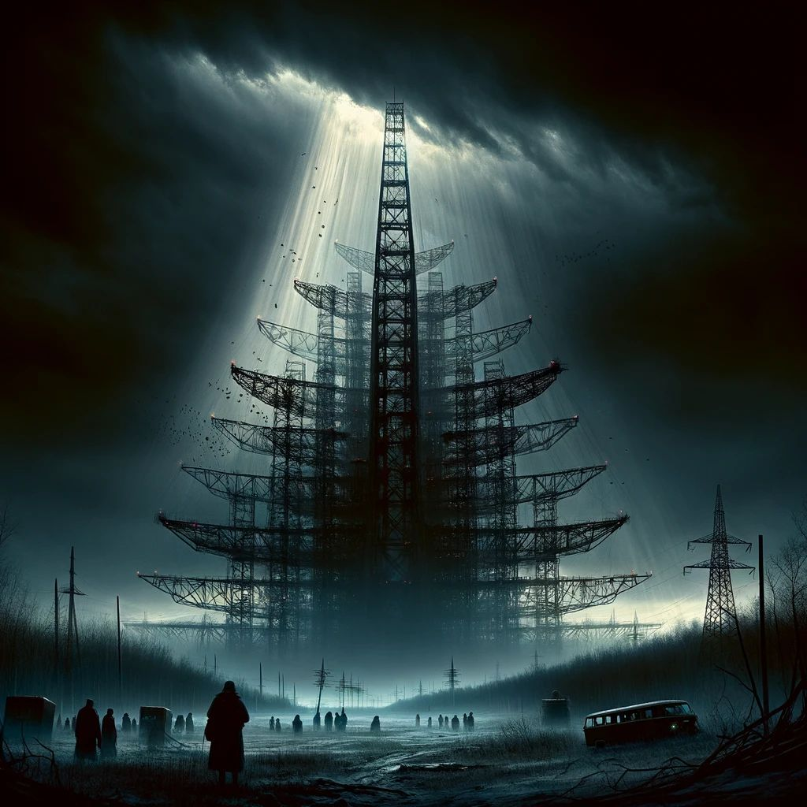
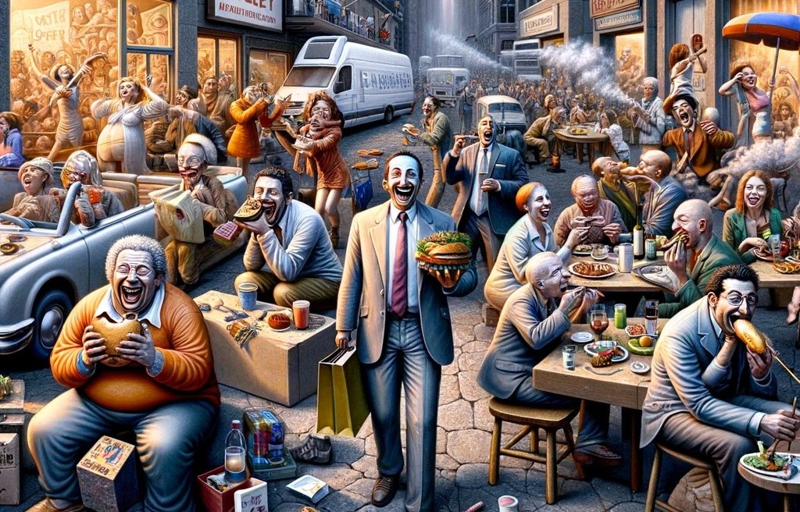

-

L' innovazione è un'attività di pensiero che, elevando il livello di conoscenza attuale, perfeziona un processo migliorando quindi la qualità di vita dell'uomo... E' cambiamento che genera progresso umano, porta con sè valori e risultati positivi, mai negativi.
-

Viaggio eterno
Nel 2037, il tessuto stesso della realtà umana subì una metamorfosi senza precedenti. L'umanità, attraverso una fusione di tecnologie mediche avanzate e scoperte genetiche rivoluzionarie, raggiunse un traguardo che per millenni era stato solo un sogno: l'immortalità. Ma non era una semplice immortalità; era un'eterna giovinezza, un perpetuo stato di grazia in cui ogni individuo rimaneva sospeso nella vitalità e nell'energia dei suoi 30 anni. Questa straordinaria svolta non fu un caso o un prodotto del destino; fu il risultato di uomini e donne decisi, unici, visionari e profondamente buoni, che, con l'assistenza e la guida di intelligenze artificiali avanzate, intrapresero una missione per elevare l'umanità a nuove vette.
Con l'avvento dell'immortalità, un altro cambiamento radicale si manifestò: l'era delle fabbriche autonome. Queste meraviglie della tecnologia, alimentate da fonti di energia praticamente inesauribili, iniziarono a produrre tutto ciò che l'umanità desiderava e necessitava. Il denaro, che per secoli aveva guidato conflitti, ambizioni e divisioni, divenne rapidamente obsoleto. E con la sua scomparsa, sparì anche la cattiveria, l'invidia e la competizione. L'umanità entrò in un'epoca dorata di cooperazione, condivisione e amore universale. La bontà divenne la norma, e la gentilezza, la regola.
Ma l'immortalità portò con sé nuove sfide. La Terra, con le sue risorse finite, iniziò a sentire il peso di una popolazione di immortali in costante crescita. Ma l'umanità, ora libera da vincoli e limitazioni, non vide questo come un problema, ma come un'opportunità. Lo spazio, l'ultima frontiera, divenne la nuova destinazione. Con navi spaziali dotate di tecnologie all'avanguardia, l'umanità iniziò il suo viaggio tra le stelle. Pianeti venivano esplorati e colonizzati, non solo come nuove case, ma come nuovi mondi di esperienze. Ci furono pianeti dedicati all'arte, dove la creatività non conosceva limiti; pianeti sportivi, dove ogni gioco immaginabile era possibile; e pianeti dei sogni, dove la realtà poteva essere modellata secondo i desideri del cuore.
E mentre l'umanità si espandeva nell'universo, la sua essenza cambiava. Le persone, ora libere da bisogni materiali e paure esistenziali, si dedicavano a perseguire passioni, conoscenze e sogni. Ogni individuo divenne un esploratore, un artista, un sognatore. Le comunità si formavano basate su interessi e passioni condivise, piuttosto che su geografia o etnia. E in questo vasto e infinito universo, l'umanità trovò la sua vera vocazione: non come dominatori, ma come custodi, esploratori e, soprattutto, come sognatori eterni.
-

Cercansi…
(con malinconica ironia immagino un'annuncio nel 2057)
Cerchiamo Esseri Umani istruiti, sapienti, esperti, accorti, perspicaci, intuitivi, sagaci, informati, consapevoli, pensanti, riflessivi, saggi, iniziati, colti, filosofi, visionari, innovatori, creativi, evoluti, attenti, ingegnosi, intellettuali.. progressisti, eletti, guidati, autorevoli, previdenti, risvegliati.. profondi conoscitori, praticamente sapienti del mondo, esperti di vita, risvegliati dalla conoscenza, maestri cultori della saggezza, illuminati dalla verità, dal sapere, e dalla consapevolezza.. .. esaminiamo anche onniscienti, onnipotenti, spirituali, intuitivi del divino, profeti, veggenti… e similari.
Chi è in possesso di almeno 5 requisiti può contattarci telepaticamente pensando forte il codice 2057CP99WL11A
(preferibilmente in orario notturno).
Scopo: Clonazione Genetica per riproduzione in serie.
Anche se immortali astenersi perditempo.
(in quanto non ancora tutti lo siamo ! grazie)
-
Che Buona
Il Miracolo della Frutta: Un Cibo Fatto su Misura per Noi
La frutta, con la sua dolcezza naturale e la sua varietà di colori, non è solo un piacere per il palato, ma sembra essere un alimento incredibilmente adatto al nostro corpo.
I nostri denti, dalla superficie piatta ideale per macinare, ai canini non particolarmente aguzzi, sono perfetti per mordere e masticare i frutti.
Inoltre, il nostro sistema digestivo, più lungo rispetto a quello dei carnivori, è progettato per gestire efficacemente i cibi ricchi di fibre come la frutta.
Anche l'acidità dello stomaco, più bassa rispetto a quella dei carnivori, è ottimale per digerire cibi vegetali piuttosto che carne.
Infine, il nostro amore innato per il sapore dolce suggerisce una predisposizione biologica al consumo di frutta matura.
Quindi, la frutta non è solo una delizia, ma un cibo che il nostro corpo sembra desiderare e amare naturalmente.
-

..pseudoparallelepipedizzazione..
La contraddittorietà dell'anticonformismo ha portato alla paradossale paradossalità dell'essere alternativi, dove l'essere diversi diventa la norma e la normalità diventa l'eccezione.
-

Illuminismo e oscurantismo
Un richiamo all'importanza della ragione.
L'Illuminismo e l'oscurantismo sono due correnti di pensiero che si sono confrontate nel corso della storia europea.
L'Illuminismo, nato nel 18esimo secolo, è stato un movimento culturale e intellettuale che ha posto l'accento sulla razionalità, la libertà individuale e il progresso scientifico. Gli illuministi hanno sostenuto che la ragione e l'esperienza empirica sono le uniche fonti di conoscenza autentica e che ogni pregiudizio e dogma devono essere messi in discussione.
Tra i principali pensatori illuministi ci sono stati John Locke, Voltaire, Jean-Jacques Rousseau e Immanuel Kant, che hanno influenzato profondamente la filosofia, la politica e la cultura dell'Europa e dell'America del Nord.
Tra i pensatori italiani, uno dei più noti è stato Cesare Beccaria, autore del celebre libro “Dei delitti e delle pene”. Nel suo libro, Beccaria ha sostenuto la necessità di riformare il sistema penale italiano e ha criticato la pratica dell'uso della tortura e delle condanne a morte.
Un altro importante pensatore italiano dell'Illuminismo è stato Giambattista Vico, filosofo e storico che ha sviluppato un'originale teoria della storia umana. Vico ha sostenuto che la storia umana è caratterizzata da cicli di progresso e declino e ha sviluppato un'importante teoria della conoscenza umana.
Gli illuministi hanno promosso l'idea che l'umanità possa progredire verso la conoscenza e la virtù attraverso l'educazione e la diffusione della ragione. In questo modo, hanno sostenuto la libertà individuale e la democrazia come i principi fondamentali della giustizia sociale.
Ecco alcuni esempi di illuminismo:
Scienza e tecnologia hanno portato a grandi scoperte e progressi che stanno migliorando la vita delle persone, dall'innovazione medica alla tecnologia dell'informazione.
Diritti umani e giustizia sociale che continua a progredire, con molte organizzazioni e individui che si impegnano per la promozione dell'uguaglianza e della libertà.
Educazione che con l'accesso all'istruzione e alla conoscenza è diventato più ampio e accessibile grazie alla diffusione dell'istruzione online, delle biblioteche digitali e dei programmi di apprendimento innovativi.
Sostenibilità ambientale cui la consapevolezza sull'importanza sta crescendo e sempre più persone e organizzazioni stanno adottando pratiche ecologiche per proteggere il pianeta.
Pensiero critico e valutazione oggettiva delle informazioni stanno diventando sempre più importanti per evitare la disinformazione e le false notizie.
L'Illuminismo ha incontrato molta resistenza da parte di coloro che temevano che la diffusione della ragione potesse minare le istituzioni tradizionali come la Chiesa, la nobiltà e il governo. Questi oppositori sono stati spesso associati all'oscurantismo.
L'oscurantismo è stato un movimento culturale contrario alla diffusione della ragione e della scienza. L'oscurantismo si basa su un atteggiamento di chiusura mentale e di conservatorismo che mirava a mantenere l'autorità della Chiesa, della tradizione e della gerarchia sociale. In particolare, l'oscurantismo medievale ha rappresentato un periodo di grande potere della Chiesa cattolica, che ha spesso usato la religione per reprimere l'opposizione intellettuale e mantenere l'ordine sociale tradizionale.
Qualche esempio di oscurantismo (odierno) ?
Negazionismo scientifico di fatti ben stabiliti, come il cambiamento climatico o la sicurezza dei vaccini.
Disinformazione online con la diffusione di notizie false o di propaganda su internet.
Fondamentalismo religioso che si oppone alla libertà individuale e alla tolleranza.
Anti-intellettualismo con il discredito o la sfiducia verso la conoscenza specialistica o l'istruzione superiore.
Censura del discorso o della libertà di espressione.
Esoterismo con la credenza in teorie basate su credenze pseudoscientifiche o paranormali.
L'idea di Illuminismo continua ad essere importante e rilevante oggi come lo era nel 18esimo secolo. Tuttavia, il contesto culturale, politico ed economico in cui viviamo oggi è molto diverso da quello dell'Europa di quel secolo, e pertanto le idee e le sfide che dobbiamo affrontare sono anche diverse.
In particolare, oggi viviamo in un mondo altamente tecnologico e interconnesso, dove l'informazione è facilmente accessibile e diffusa in modo globale. Tuttavia, questa stessa facilità di accesso all'informazione ci espone anche a molte fonti di disinformazione e propaganda, rendendo sempre più difficile per le persone comprendere la realtà e prendere decisioni informate.
In questo contesto, l'idea di illuminismo dovrebbe essere rilanciata come un richiamo all'importanza della ragione, della libertà e della tolleranza, non solo come valori morali, ma anche come strumenti per sviluppare una cittadinanza critica e consapevole, in grado di affrontare le sfide della società moderna.
Inoltre, dovrebbe essere rilanciata come una sfida alla crescente disuguaglianza economica e sociale, in particolare nel contesto della globalizzazione e della tecnologia digitale. Ciò comporterebbe la promozione di politiche e pratiche sociali che favoriscono l'uguaglianza di opportunità e la partecipazione dei cittadini alla vita economica e sociale. Potrebbe comportare la promozione dell'educazione critica e del pensiero critico, dell'accesso all'informazione e della trasparenza delle istituzioni.
In definitiva, l'idea di illuminismo può essere rilanciata come un richiamo all'importanza della ragione, della libertà e della tolleranza, non solo come valori morali, ma anche come strumenti per affrontare le sfide della società moderna e sviluppare una cittadinanza critica e consapevole.
Tu come vuoi vivere ? Con luce o al buio ?
-
La Smurgna
(in omaggio a “Il Lonfo” di Fosco Maraini)
La Smurgna non smarzella né flubella,
e quasi mai parla a stridore.
Ma quando soffia un certo a zompe carte,
tremula un po' e sbuffa e si raggomita.
È vurda la Smurgna! Piena di smirnoffo,
tristezza e sgraziato sfarfallio!
Se incroci il suo sguardo, ti rode e ti rabbuia,
se la tocchi, ti spignatta e ti svieni.
Eppure la vecchia Smurgna indolente
che trilla e stordisce e sgobbetta nel vortice,
fa logiche fandonie, fa guazzabugli;
e quasi quasi per prenderla in giro,
gli sguazzerei un paffuto. Ma lei, scaltra,
ti rimprovera, ti svergogna; e tu soccombi.
-
Il d€naro
Il modo di produzione basato sul sistema capitalistico ha dominato l'organizzazione economica e sociale per molti secoli. Tuttavia, è stato sempre evidente che questo sistema avrebbe dovuto affrontare difficoltà e contraddizioni che avrebbero portato alla sua fine. Molti studiosi e pensatori hanno sostenuto che il capitalismo è destinato a scomparire e che una nuova forma di organizzazione economica e sociale lo sostituirà.
Il capitalismo è destinato a scomparire a causa delle sue contraddizioni interne, tra cui la disuguaglianza sociale, la concentrazione di ricchezza e potere nelle mani di pochi individui, l'inefficienza economica e l'eccessiva concentrazione di risorse e potere. Inoltre, il capitalismo richiede una crescita esponenziale insostenibile, che porta a un consumo insostenibile di risorse naturali e ad un aumento dell'inquinamento e dei cambiamenti climatici. Ci sono alternative al capitalismo che mirano a superare queste contraddizioni eliminando la proprietà privata dei mezzi di produzione e creando una società più equa e giusta.
La fine del sistema economico attuale e l'inizio di una nuova forma di organizzazione economica e sociale rappresenta la separazione tra la preistoria e la storia. Questa nuova forma di organizzazione economica e sociale mira a creare una società in cui le risorse sono utilizzate in modo equo e sostenibile, dove tutti hanno accesso alle risorse di cui hanno bisogno per vivere una vita dignitosa. In questo modo, rappresenta una forma di organizzazione economica e sociale che può garantire un futuro migliore per tutti.
Immagina una società in cui il denaro non ha più alcun ruolo, in cui le risorse e i beni sono disponibili a tutti in modo equo, senza che l'accesso ad essi sia limitato da fattori come il reddito o lo status sociale. In questa società, le persone potrebbero finalmente vivere in un mondo più giusto e solidale, dove la cooperazione e la condivisione sono considerate virtù fondamentali, invece della competizione e dell'accumulo di ricchezza.
In una società senza denaro, il concetto di proprietà privata sarebbe completamente ribaltato, poiché non ci sarebbe più bisogno di possedere beni materiali per garantire la propria sopravvivenza o il proprio benessere. Al contrario, le persone sarebbero motivate a condividere ciò che hanno, a lavorare insieme per creare una comunità più forte e resiliente.
Inoltre, una società senza denaro favorirebbe l'innovazione tecnologica e lo sviluppo sostenibile. La ricerca e lo sviluppo sarebbero incentrati sulla soluzione dei problemi reali della società, come la lotta contro il cambiamento climatico, la prevenzione delle malattie o la gestione delle risorse naturali. Ciò porterebbe a una maggiore efficienza e a una riduzione degli sprechi, favorendo così uno stile di vita più sostenibile per tutti.
Le relazioni sociali sarebbero basate sulla solidarietà, sulla compassione e sulla cura reciproca, piuttosto che sull'egoismo e sulla rivalità. Ci sarebbe una maggiore coesione sociale e non ci sarebbero conflitti, poiché le persone sarebbero motivate a lavorare insieme per il bene comune. Inoltre, la mancanza di denaro come fonte di potere e status porterebbe a una maggiore uguaglianza di genere e a una maggiore inclusione delle minoranze, poiché non ci sarebbe più bisogno di competere per il denaro o di dipendere da coloro che lo possiedono.
In una società senza denaro, le persone finalmente godrebbero della libertà di scegliere il loro lavoro in base alle proprie passioni e alle proprie abilità, senza dover preoccuparsi di guadagnare abbastanza denaro per vivere. Maggior benessere mentale, maggiore realizzazione personale, poiché le persone avrebbero la libertà di esplorare i loro interessi e di sviluppare le loro capacità senza doversi preoccupare delle esigenze del mercato.
Una società senza denaro potrebbe offrire molti vantaggi e potrebbe rappresentare un obiettivo veramente interessante da perseguire!
-
…di sera
“Indossare occhiali da sole anche di sera” può essere interpretato in diversi modi a seconda del contesto. In generale, l'espressione può essere associata all'idea di qualcuno che cerca di apparire cool, alla moda o misterioso.
Può anche essere interpretato come un atteggiamento distaccato o sfuggente, poiché indossare occhiali da sole anche di sera può impedire alle altre persone di leggere le espressioni facciali dell'individuo e di capire il suo stato d'animo.
L'interpretazione esatta dell'espressione dipende dal contesto in cui viene utilizzata e dalle intenzioni dell'individuo che la usa. In ogni caso, l'uso degli occhiali da sole anche di sera può avere effetti negativi sulla vista a causa dell'abbassamento della luminosità naturale, per cui si consiglia di utilizzarli solo in situazioni di luce solare intensa.
..ogni tanto mi va di approfondire qualche riflessione..
-

Pi (greco) π
Irrazionale e trascendente ma…
Il Pi greco è stato citato e utilizzato in molte opere di letteratura e di arte, e la sua presenza nelle leggi della fisica e della matematica lo rende uno dei numeri più importanti e intriganti della cultura umana.
Archimede (matematico greco) fu uno dei primi a calcolare con precisione il valore del Pi greco (che d'ora in poi chiameremo Pi).
Più di recente, il calcolo del Pi è stato utilizzato anche per mettere alla prova la potenza di calcolo dei computer, e negli ultimi anni sono stati raggiunti record impressionanti di calcolo del valore di Pi con l'utilizzo di supercomputer e algoritmi sempre più sofisticati.
Il numero Pi è uno dei valori costanti più importanti e utilizzati nella scienza, nella tecnologia e nella vita quotidiana. Questo valore costante è stato studiato fin dall'antichità, ed è stato utilizzato in molte applicazioni pratiche e teoriche in molteplici campi, dalla geometria alla fisica, dall'ingegneria alla matematica.
Il Pi rappresenta il rapporto tra la circonferenza e il diametro di un cerchio. Questo valore costante è stato calcolato con una precisione di oltre un trilione di cifre decimali, ed è stato oggetto di studio da parte di molti matematici e scienziati nel corso dei secoli.
Una delle applicazioni più importanti del Pi è nella geometria, dove viene utilizzato per calcolare l'area e il volume di molte figure geometriche. Ad esempio è fondamentale per calcolare l'area di un cerchio, la superficie di una sfera e il volume di un cilindro. La geometria è presente in molti campi, dall'ingegneria alla fisica, dalla matematica alla meccanica dei fluidi, e il numero Pi è un valore fondamentale per comprendere e risolvere molti problemi pratici.
Ma l'utilizzo del numero Pi non si limita alla geometria. Questo valore costante è presente in molte altre formule matematiche e fisiche, come la legge di Coulomb per la forza elettrica e nella formula per calcolare la costante di gravitazione universale di Newton. L'universo stesso è caratterizzato da molti fenomeni circolari e sferici, come le orbite planetarie e le forme delle galassie, il che rende il numero Pi ancora più rilevante nella comprensione del nostro universo.
Il Pi è presente anche in molti altri campi, come la statistica e la teoria dei numeri. E' utilizzato per calcolare la probabilità di eventi casuali, per descrivere le proprietà dei numeri primi, nella crittografia (dove viene utilizzato per proteggere i dati sensibili e confidenziali). E' presente anche nella vita quotidiana, dalla costruzione di strade e di edifici alla moda e al design. La geometria e il Pi sono fondamentali per la progettazione e la costruzione di molti oggetti e strutture che ci circondano (ad esempio nella progettazione di ponti, strade ed edifici per garantire la loro stabilità e sicurezza). Lo troviamo in molti aspetti culturali e artistici, è stato utilizzato anche nella musica per descrivere le relazioni tra le frequenze delle note, e nell'arte per creare opere geometriche e simmetriche…
Il Pi greco è un numero infinito e misterioso che ci sfida a cercare sempre nuove scoperte e soluzioni nella scienza e nella matematica. E' un simbolo della bellezza e dell'armonia della natura, che ci ispira a cercare la perfezione e la comprensione del mondo e di tutto ciò che ci circonda.
P.S.: buon 3.14159265358979323846264338327950… .. .
-
Non è giusto però
(storiella)
C'era una volta un uomo di nome Antonietto che aveva trascorso gran parte della sua vita lottando contro una malattia debilitante. Nonostante tutti gli sforzi per trovare una cura, la malattia aveva continuato a progredire e ora Antonietto sapeva che il suo tempo sulla terra stava per finire.
Mentre si trovava nel suo letto d'ospedale, Antonietto si mise a pensare al futuro e alle innovazioni che sarebbero state scoperte dopo la sua morte. Sapeva che molte ricerche scientifiche erano in corso per trovare una cura per la sua malattia e che probabilmente sarebbero state scoperte nuove terapie e tecnologie in grado di curare anche le malattie più difficili, tra cui la sua.
Ma Antonietto era anche triste perché sapeva che non avrebbe mai potuto beneficiare di queste scoperte. Si chiedeva perché l'innovazione non fosse andata un po' più veloce, perché le persone come lui erano obbligate a vivere nel passato e a lottare contro malattie che un giorno sarebbero state facilmente curabili.
Nonostante la tristezza, Antonietto si consolò con il pensiero che le future generazioni avrebbero vissuto in un mondo in cui le malattie mortali erano diventate una cosa del passato.
Con questo pensiero, chiuse gli occhi e si addormentò per sempre.
(riflessione)
L'innovazione e la scoperta di nuove cure sono frenate o indirizzate dalle dinamiche economiche. Il denaro, che dovrebbe essere uno strumento per facilitare lo scambio e il progresso, si trasforma spesso in un ostacolo che rallenta la ricerca (oltre a rendere le cure inaccessibili a molti). In un mondo ideale, l'innovazione dovrebbe essere guidata dalla volontà di salvare vite e migliorare la qualità dell'esistenza, non dalla ricerca del profitto.
-

Supersimmetria
La supersimmetria è una teoria fisica che cerca di unificare le forze fondamentali dell'universo, come la gravità, l'elettromagnetismo e le forze nucleari deboli e forti, attraverso l'introduzione di particelle supersimmetriche, o “spartner”, che hanno proprietà simili a quelle delle particelle esistenti ma differiscono per il loro spin.
Il codice di correzione degli errori presente nelle equazioni della supersimmetria si riferisce a un insieme di regole matematiche che permettono di correggere eventuali errori presenti nelle equazioni che descrivono la supersimmetria. Queste regole sono simili a quelle utilizzate nei codici di correzione degli errori nei computer e sono utili per mantenere la coerenza e l'integrità del modello teorico.
Il fatto che il codice di correzione degli errori presenti nelle equazioni della supersimmetria sia simile a quello utilizzato nei computer potrebbe essere anch'esso un indizio che suggerisce che l'universo sia una simulazione!
-

Gli itagliani
(non è un errore)
I recenti risultati di sondaggi condotti da istituti di ricerca, hanno rilevato che un numero significativo di italiani crede in teorie del complotto e idee non convenzionali. Secondo il sondaggio, il 15% degli italiani crede che la Terra sia piatta, il 17% crede che l'Olocausto non sia mai avvenuto, il 18% crede nella presenza di rettiliani tra noi, il 25% crede che i vaccini siano uno strumento di controllo di massa attraverso il 5G, e il 29% crede che lo sbarco sulla Luna non sia mai avvenuto.
Sì, si può considerare come ignoranza il credere che la Terra sia piatta, poiché questa teoria è stata smentita scientificamente da molti secoli e oggi è ampiamente accettata come fatto scientifico. Tuttavia, è importante ricordare che l'ignoranza non è sempre volontaria o intenzionale e può essere il risultato di una mancanza di accesso all'istruzione, alla scienza e all'informazione accurata. Inoltre, l'ignoranza può riguardare diverse aree della conoscenza, non solo quella scientifica, ma anche quella storica, politica, sociale e culturale.
Dove potrebbe essere stato commesso l'errore che ha portato a queste convinzioni diffuse? Chi o cosa potrebbe essere responsabile? La scuola, le famiglie, il giornalismo o i social network?
Queste persone sono arrabbiate con il mondo e manifestano il loro disagio attraverso queste credenze, o sono semplicemente ignoranti?
Come sarà possibile affrontare sfide etiche ed economiche complesse o come il cambiamento climatico quando una parte significativa della popolazione non crede in fatti fondamentali?
Una possibile spiegazione di questo fenomeno è che le informazioni errate o false sono diffuse rapidamente sui social media e su internet in generale, dove le persone possono trovare supporto a queste credenze in comunità di persone che condividono la stessa opinione. Inoltre, la mancanza di una cultura scientifica diffusa e l'assenza di una buona educazione scientifica nelle scuole possono contribuire a questo fenomeno. In ogni caso, la diffusione di credenze erronee come queste è preoccupante perché dimostra una mancanza di capacità critica e di discernimento nell'analizzare le informazioni, cosa che può portare a una serie di conseguenze negative per la società, come la diffusione di teorie del complotto o la negazione di fatti scientifici comprovati.
Nel nostro Paese la situazione è davvero complicata, se anche secondo gli studi dell'Ocse, il 30% della popolazione è al livello ‘uno su cinque' per capacità cognitive, negli altri Paesi dell'Ocse solo il 5% della popolazione è in queste condizioni. Tutto questo non può essere solo una cosa di tecnici o di addetti ai lavori, solo se la maggioranza della popolazione riterrà desiderabile questo cambiamento le politiche andranno in questa direzione.
Bisogna ridefinire le relazioni tra Europa e quei Paesi che storicamente hanno fornito le risorse che alimentano i nostri stili di vita, attualmente non sostenibili.
E mentre molti paesi europei avanzano verso l'energia pulita, l'Italia sembra più interessata al gas. La logica che l'attuale modello economico sia meno dannoso per l'economia e l'occupazione rispetto a un'azione decisa sul clima è discutibile. L'approccio estrattivo e basato sui combustibili fossili renderà la vita delle persone più difficile e costosa, con emissioni in aumento e impatti climatici sempre più visibili. È ipocrita per l'Europa ridurre la dipendenza dai combustibili fossili a casa, spingendo un'economia estrattiva sui propri vicini. La negazione del clima non è l'ostacolo principale al cambiamento del sistema, ma piuttosto la convinzione che solo le soluzioni legate al “business as usual” (fare affari come al solito) possano far funzionare il mondo.
Fa parte del Green Deal europeo, e la transizione energetica non si limita a sostituire i combustibili fossili con le energie rinnovabili, ma rappresenta anche un'opportunità per porre fine a un sistema economico che favorisce i ricchi a discapito dei poveri.
Va sottolineato il ruolo cruciale dell'educazione, della comunicazione e del coinvolgimento delle giovani generazioni nel processo di transizione verso un mondo sostenibile… certo, magari con insegnanti capaci, dal giusto calibro, come avrebbero potuto esserlo tanti grandi della ‘nostra' storia:
Alessandro Volta, Galileo Galilei, Enrico Fermi, Guglielmo Marconi, Evangelista Torricelli, Giovanni Aldini, Antonio Meucci, Luigi Galvani, Tullio Levi-Civita, Camillo Golgi, Rita Levi-Montalcini, Bartolomeo Eustachio, Marcello Malpighi, Leonardo da Vinci, Francesco Redi, Antonio Pacinotti, Alessandro Cruto, Vittorio de Sabata, Giovanni Battista Morgagni, Paolo Frisi, Luigi Ferdinando Marsili, Giovanni Domenico Cassini, Giovanni Battista Venturi, Camillo Renato, Giovanni Alfonso Borelli, Ugo Fano, Carlo Emilio Bonferroni, Giovanni Antonio Amedeo Plana, Ulisse Dini, Federigo Enriques, Vito Volterra, Eugenio Beltrami, Michele Angelo Sala, Domenico Cotugno, Gian Domenico Romagnosi, Felice Fontana, Giancarlo Rota, Ettore Majorana, Giulio Natta, Daniele Barbaro, Giovanni Battista Beccaria, Bonaventura Cavalieri, Jacopo Riccati, Lorenzo Respighi, Gian Francesco Malfatti, Antonio Vallisneri, Francesco Algarotti, Francesco Maria Grimaldi, Paolo Sarpi, Gino Fano, Tito Vignoli, Margherita Hack, Francesco Severi, Giovanni Battista Benedetti, Giovanni Battista Hodierna, Giovanni Battista Guglielmini, Bernardino Ramazzini, Giovanni Battista Morgagni, Giovanni Battista Amici, Giovanni Battista Riccioli, Giovan Battista della Porta, Fabio Colonna, Maria Gaetana Agnesi, Giuseppe Piazzi, Giuseppe Peano, Federico Cesi, Giuseppe Molesini, Francesco Carlini, Giovanni Francesco Gorgoni, Marcello Cervini, Giovanni Battista Donati, Gabriele Falloppio, Niccolò Fontana Tartaglia, Giovanni Battista Zupi, Camillo e Adriano Olivetti, Carlo Rubbia… …
Il problema con i negazionisti scientifici è di come affrontare il loro modo di ragionare e le loro credenze errate in modo rispettoso ma efficace. La strategia più efficace è quella di mettere in evidenza i difetti del ragionamento negazionista, che si basa su cinque tecniche di ragionamento imperfette: raccogliere solo le prove che sembrano confermare le proprie idee, fare ampio affidamento alle teorie del complotto, impegnarsi in ragionamenti illogici, affidarsi a falsi esperti e insistere sul fatto che la scienza debba essere perfetta. La confutazione delle idee errate non è futile e non bisogna attaccare l'identità delle persone ma cercare di rendere evidente, in maniera rispettosa, l'illogicità di certe posizioni.
-
E-m@il(s)
Al plurale la parola “email” si scrive con la “s” finale diventando “emails”. Questa è una regola dell'inglese che prevede l'aggiunta della “s” per formare il plurale di molte parole. Tuttavia, è importante notare che in italiano la parola “email” è invariabile al plurale e quindi si scrive sempre “email”, sia al singolare che al plurale.
Le parole inglesi entrate a far parte della lingua italiana (stop, film, fan, email, computer, cracker) non prendono la “s” del plurale: sono ormai parole italiane a tutti gli effetti, e vanno trattate come tali.
In Italia, è molto comune utilizzare la parola “email” al singolare anche quando ci si riferisce a più di un messaggio. Quindi, sebbene sia possibile sentire persone che utilizzano il termine “emails” in Italia, la forma più corretta sarebbe “email” ma non è comunque da considerarsi errore usare “emails”.
L'email è uno strumento di comunicazione essenziale nella vita privata e professionale. Le email non sono considerate un mezzo di comunicazione istantaneo. A differenza delle applicazioni di messaggistica istantanea come WhatsApp, Facebook Messenger, Telegram, etc… Rrichiedono un po' più di tempo per essere inviate e ricevute. Sono consegnate al server di posta elettronica del destinatario e possono richiedere alcuni minuti o anche ore per essere consegnate, a seconda dei fattori come la velocità della connessione Internet o la quantità di traffico di posta in arrivo. Inoltre, le email non supportano nativamente le notifiche in tempo reale, quindi il destinatario non riceve un avviso immediato quando riceve un nuovo messaggio. Tuttavia, sono ancora uno strumento di comunicazione molto utilizzato per la loro affidabilità e capacità di inviare messaggi a destinatari in qualsiasi parte del mondo.
Quando si scrive un'email, il saluto iniziale è la prima impressione che si dà al destinatario, quindi è importante scegliere un saluto appropriato in base al contesto e alla relazione con il destinatario. E' importante fare una buona impressione fin dal principio, comunicare con efficacia, e dare segni di buona educazione e rispetto verso il destinatario.
È una pratica comune evitare di utilizzare saluti che si riferiscono alla fase temporale della giornata, come “Buongiorno”, “Buona sera” o “Buon pomeriggio”, poiché non si sa quando il destinatario leggerà l'email. In alternativa, è meglio utilizzare un saluto più neutro come “Salve”, che non fa riferimento a un momento specifico del giorno.
Se l'email è formale, è importante utilizzare un saluto formale come “Egregio”, “Gentile”, “Spettabile” o “Ill.mo” seguito dal cognome del destinatario. Questo tipo di saluto è adatto quando si scrive a persone di rango superiore o a contatti professionali con cui non si ha un rapporto di amicizia.
In caso di email informali, invece, si può utilizzare un saluto meno formale come “Ciao”, “Salve” o “Hey” seguito dal nome del destinatario. Anche omettere saluti all'inizio per concentrarli alla fine è spesso usato con buona parvenza.
Infatti un altro saluto possibile è “Distinti saluti” o “Cordiali saluti”, etc.. . Questi saluti sono appropriati sia per le email formali che informali e possono essere utilizzati come saluto di chiusura per concludere in modo gentile e rispettoso l'email.
-

…troppa fantastia ?
Questo è un racconto ottenuto mischiando un po di storia, un po di realtà.. e molta fantasia direbbe qualcuno..
In un lontano pianeta chiamato Nibiru, vivono gli Annunaki, una razza di esseri straordinariamente avanzati. Essi possono vivere anche fino a cinquemila anni terrestri. Ma il loro mondo ha un'orbita eccentrica che lo allontana dal sole per lunghi periodi, causando un drastico abbassamento della temperatura.
Per evitare l'estinzione della vita sul loro pianeta, gli Annunaki hanno sviluppato una tecnologia per disperdere oro nanopolverizzato nell'alta atmosfera, creando uno strato nebulizzato che mantiene il caldo sul loro globo.
Tuttavia, gli Annunaki avevano bisogno di costanti approvvigionamenti di oro e durante le loro esplorazioni cosmiche, hanno scoperto la Terra. Ogni circa diecimila anni, quando Nibiru è più vicino, gli Annunaki si recano sulla Terra per estrarre oro, usando gli esseri presenti sul pianeta come schiavi nelle loro miniere.
In una di queste missioni, gli Annunaki decisero di creare una nuova specie di esseri umani terrestri, chiamati Homo Sapiens, attraverso l'unione del loro DNA con quello di una razza di scimmie terrestri. Questi esseri sarebbero stati destinati a lavorare come schiavi, mentre gli Annunaki avrebbero regnato sulla Terra.
Gli Annunaki erano dotati di tecnologie avanzate e costruirono molte grandi opere, come le piramidi, influenzando molte religioni e culture antiche.
L'ultima volta che gli Annunaki se ne andarono dalla Terra, hanno lasciato dietro di sé una grande eredità: crearono i loro discendenti, i Faraoni. Questi esseri umani erano direttamente discendenti degli Annunaki e inizialmente vivevano anche fino a trecento anni terrestri. Erano addestrati fin dalla nascita per governare il mondo.
Ma con il passare del tempo, i Faraoni si sono resi conto che per mantenere il loro potere, dovevano mantenere l'umanità ignorante e schiava. Così, attraverso una serie di inganni e manipolazioni, i Faraoni sono riusciti a mantenere il loro potere sulla Terra fino ai giorni nostri.
Oggi, i Faraoni sono ancora tra noi come membri delle élite globali. Essi controllano le risorse e le finanze mondiali, sono i leader politici e militari, i proprietari delle grandi corporation e delle multinazionali.
La verità sulla loro vera natura e sul loro potere è stata nascosta alla maggior parte dell'umanità, ma alcuni cercano ancora di scoprire la verità e liberare l'umanità dalla schiavitù che i Faraoni hanno imposto sulla Terra.
Un mondo dominato da questi poteri, l'umanità era costretta ad utilizzare fonti di energia provenienti dal petrolio e da combustibili fossili, causando la distruzione dell'ecosistema e l'inquinamento delle risorse naturali. Il cibo disponibile era spesso volutamente privo di nutrienti e di energia vitale, e i farmaci erano prodotti dalle grandi case farmaceutiche volutamente a prezzi esorbitanti.
Gli esseri umani erano costretti a vivere sotto il giogo del sistema e del denaro, e il futuro sembrava sempre più incerto e buio.
Tuttavia, la storia ha preso una svolta inaspettata grazie all'intervento di tale Elon Musk, un imprenditore visionario che ha deciso di intraprendere una missione per liberare l'umanità dalla schiavitù.
Attraverso le sue creazioni, come Tesla, SolarCity, OpenAI, Neuralink, Starlink e SpaceX, Musk ha creato un nuovo mondo in cui tutto funziona bene e la malattia non esiste. I veicoli elettrici e a guida autonoma di Tesla hanno sostituito quelli a combustione, riducendo notevolmente l'inquinamento dell'aria e salvaguardando la salute dei cittadini.
SolarCity ha fornito energia pulita e rinnovabile a tutti, eliminando la dipendenza dai combustibili fossili e la vulnerabilità agli shock petroliferi. Grazie a OpenAI, Musk ha creato una tecnologia all'avanguardia in grado di risolvere i problemi più complessi del mondo.
L'umanità ha trovato rimedi per le malattie incurabili e ha scoperto nuovi modi per produrre cibo vivo, sano e sostenibile. Inoltre, SpaceX ha reso possibile l'esplorazione spaziale e la colonizzazione di nuovi mondi, aprendo nuove opportunità per l'umanità e rendendo possibile la costruzione di civiltà extraterrestri.
Ma la vera rivoluzione è stata l'eliminazione del denaro e l'adozione della meritocrazia. In questo nuovo mondo, le persone sono valutate in base alla loro abilità e talento, piuttosto che alla loro ricchezza o posizione sociale. Ciò ha permesso di creare un sistema equo e giusto, in cui tutti hanno la possibilità di realizzare il loro pieno potenziale.
L'umanità ha finalmente abbandonato l'era dell'oscurantismo e della schiavitù, per entrare in una nuova era di progresso e prosperità. Grazie alla visione di Elon Musk e ad altre menti brillanti come la sua, l'umanità ha trovato la strada per un futuro luminoso e speranzoso.
-

Duga
Questa storia è un tessuto di fantasia e realtà, creata per intrattenere e provocare riflessione, senza alcuna intenzione di sostenere teorie cospirazionistiche. Ogni riferimento a eventi o luoghi reali serve solo da sfondo per un'esplorazione creativa.
C'era una volta (e c'è ancora), in un'isolata regione della Russia, una monumentale e misteriosa antenna di radar chiamata “Duga”. Alta e possente, sembrava sfidare i confini del cielo con le sue strutture metalliche. Questa struttura imponente era parte di un progetto ambizioso, presentato come un'opera di difesa militare senza precedenti durante la Guerra Fredda.
L'antenna di Duga non era solo un'opera d'arte ingegneristica, ma prometteva enormi potenzialità per tutta la Russia. Era progettata per operare come un sofisticato sistema di allerta precoce contro i missili balistici a lungo raggio provenienti da altre nazioni.
La sua portata estesa e la capacità di rilevare minacce a lunga distanza avrebbero dato all'Unione Sovietica un'importante vantaggio strategico durante uno dei periodi più tesi della storia mondiale.
Operai, ingegneri e tecnici avevano lavorato instancabilmente per dare vita a questa innovativa struttura, con la speranza di proteggere la nazione e garantire la sicurezza del popolo russo. L'antenna di Duga doveva diventare un punto di riferimento dell'ingegneria militare, dimostrando la potenza tecnologica e la forza difensiva della Russia agli occhi del mondo.
Ma, a dispetto delle speranze e delle ambizioni, l'antenna di Duga non fu mai completamente messa in funzione. I fondi che avrebbero dovuto completare il progetto probabilmente finirono in mani corrotte, causando incompiutezze e ritardi con grande disappunto di molti onesti lavoratori.
Ma finalmente all'orizzonte si scorgeva la data del collaudo finale prima della messa in funzione e nel frattempo, in un oscuro e segreto laboratorio, un gruppo di interesse si cullava nell'ombra del potere. Temendo che le loro azioni venissero scoperte, decisero di creare una diversiva epocale in modo da evitare il collaudo che sapevano già sarebbe stato totalmente fallimentare. Questi individui senza scrupoli orchestrarono un piano malevolo: causare un incidente al vicino reattore nucleare di Chernobyl, in modo da distogliere l'attenzione dal furto dei fondi e oscurare i fallimenti dell'antenna di Duga.
L'incidente nucleare alla centrale di Chernobyl colpì il cuore del mondo, facendo scaturire una cortina di fumo su tutto ciò che la Russia stava cercando di costruire con l'antenna di Duga. I giornali di tutto il pianeta riportarono la notizia, distogliendo l'attenzione dall'ambizioso progetto militare.
Mentre le indagini sull'incidente si susseguivano, alcune prove iniziarono a emergere, rivelando il triste destino di questo promettente progetto. La luce della verità iniziò a scaturire dalle ombre dell'inganno, lasciando intravedere la corruzione dietro l'antenna di Duga.
Anche se la grandiosa promessa dell'antenna di Duga non si avverò mai, la storia di questa struttura rimase un monito per il mondo sulla necessità di trasparenza e integrità. E mentre il mistero dell'antenna di Duga svaniva nel passato, la lezione rimase indelebile, sussurrando agli uomini del futuro l'importanza di essere onesti, veritieri e consapevoli del proprio potere. Ma pochi ascolteranno.
-

L'Homo Stupidus
(Riflessione sulla felicità in un mondo superficiale, invitando a scoprire una vita più autentica e profonda... oggi solo gli imbecilli possono essere felici... niente di male quindi a volte sforzarzi ad esserlo?)
Solo chi non ha una struttura complessa di pensiero può avvertire una felicità istantanea: mangiare, bere, vedere la televisione, comprare, stare in mezzo alla folla. Tutto quello che implica il rapporto con gli altri, lo studio, la fatica, l'attenzione, la conoscenza delle regole, la coerenza, la capacità di creare qualcosa, l'amore, sono sacrifici che pochi sono disposti ad accettare.
Siamo la società che ha rinunciato alla complessità, alla fatica di pensare, alla bellezza del diverso, alla forza dell'immaginazione... la società dell'arte come facile provocazione, dell'attenzione alle cose superficiali... la società dell'immediato, dell'apparire, dell'essere sulle prime pagine dei giornali ...si preferisce l'omologazione e la violenza come divertimento.
Tutta la documentazione contenuta nel presente sito Web, testi, illustrazioni, fotografie, video e quant'altro, è pubblicata senza fini di lucro ed è protetta in virtù delle leggi interne e delle convenzioni internazionali poste a tutela della proprietà intellettuale. Tutto il materiale presente su questo sito viene messo a disposizione al solo scopo di consultazione, tutti i diritti d'uso rimangono proprietà dei rispettivi autori. Tutti i marchi, nomi e loghi registrati, presenti sono da considerarsi appartenenti ai legittimi proprietari. Gli utenti sono autorizzati, per fini di utilizzo strettamente personali, a salvare, registrare, stampare e mostrare le informazioni ed i dati ottenuti tramite il sito. E' vietata l'utilizzazione di tali dati od informazioni nel quadro di un'attività economica o commerciale. Questo sito non ha legami con alcuna ideologia od organizzazione religiosa, filosofica o politica. Portale Personale. ffree73
email: admin@poipensaquelchevuoi.it